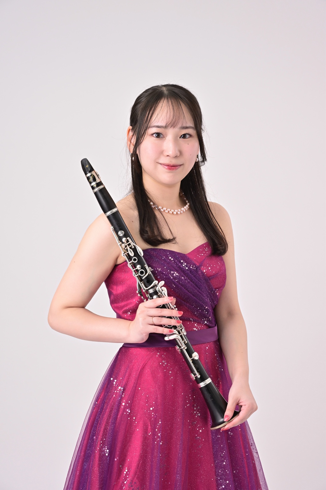
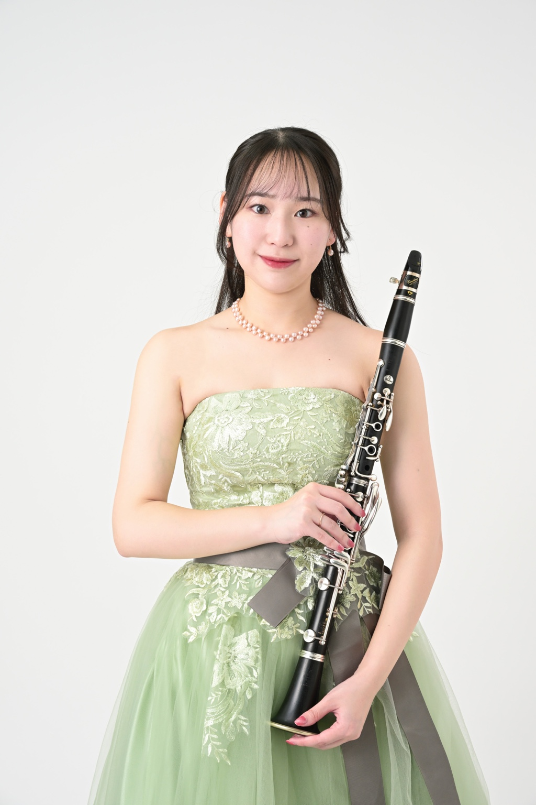
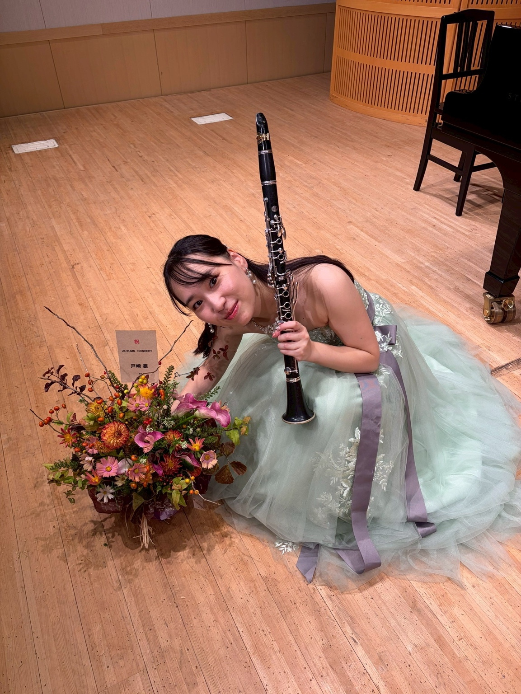

Profile
長谷川 さくら / Sakura Hasegawa
神奈川県立弥栄高等学校芸術科を卒業後、国立音楽大学に特別推薦生として入学。在学中にソリストコースに合格・修了し、大学4年次には「くにたちWINDS」のコンサートミストレスを務める。同大学卒業後、ディプロマコースを修了。
第8回横浜国際コンクール第1位をはじめ、ほか多数受賞。TIAAより学費免除推薦を受け、チューリッヒ芸術大学にてファビオ・ディ・カソラ氏のマスタークラスを受講。
モーツァルト音楽祭2016〜2018、第47回国立音楽大学神奈川県出身者による新人演奏会などに出演。
現在はソロや室内楽を中心に幅広く演奏活動を展開。フルート・クラリネット・ピアノによるトリオ「Musica SASHIMI（ムジカ サシミ）」、フルートとクラリネットによる「ポ音Duo（ポートデュオ）」、クラリネット・ピアノによるデュオ「Fleur Sanore（フルール サノール）」など、さまざまなアンサンブルで活動している。
また、「ポ音Duo」として横浜市港南区民文化センター「ひまわりの郷」の登録アーティストを務める。
Sakura’s Journal
日記と音楽のコラム

DIARY & MUSIC COLUMNLittle notes,
Little notes,
with music.
演奏会の思い出や、日々の出来事。
そして、作品やクラリネットについてのお話を綴ります。
Contact
お問い合わせ
演奏のご依頼・ご相談、その他のお問い合わせはこちらからお願いいたします。
Googleフォームが別タブで開きます。
または
公式LINEからもお気軽にお問い合わせいただけます。
スマートフォンのカメラで読み取って友だち追加できます。